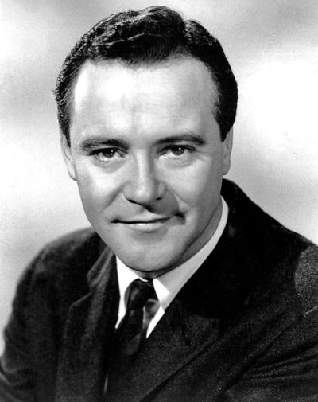

Jack Lemmon
American actor (1925–2001)
John Uhler Lemmon III (February 8, 1925 – June 27, 2001) was an American actor. Considered proficient in both dramatic and comic roles, he was known for his anxious, middle-class everyman screen persona in comedy-drama films. He received numerous accolades including two Academy Awards, five Golden Globe Awards, three BAFTA Awards, two Primetime Emmy Awards and one Volpi Cup.
Trivia
- Won the Primetime Emmy Award for Outstanding Writing for a Variety Series.
- Won the Academy Award for Best Supporting Actor.
- Won the Academy Award for Best Actor.
- Won the SAG-AFTRA Life Achievement Award.
- Won the Kennedy Center Honors.
- Won the AFI Life Achievement Award.
- Won the Primetime Emmy Award for Outstanding Lead Actor in a Miniseries or a Movie.
- Won the star on Hollywood Walk of Fame.
- Won the Screen Actors Guild Award for Outstanding Performance by a Male Actor in a Miniseries or Television Movie.
- Won the Golden Globe Cecil B. DeMille Award.
Previous Showings
1 Run • 1 Festival
All runs on record (1):
- June 17 - 18, 2000Summer 2000w/ Some Like It Hot, Marilyn Monroe, The Apartment